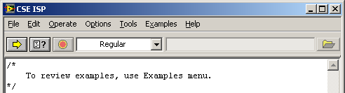
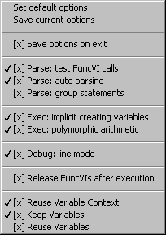

CSE ISP (further called as ISP) is a utility that allows users to run CSE scripts interactively. ISP is a multi-instance utility; you can open several ISP windows, and each one can execute its own script in parallel with the others. The controls and menu options for an ISP window are described below. Additionally, see the Quick Tips topic to learn some useful tips.

| Control | Hotkey | Description |
| <F5> | Parse and execute the script. | |
| <F4> | Parse the script only (test syntax). | |
| <Esc> | Abort execution of the running script. | |
| n/a |
Specifies an execution mode: Regular - Execute scripts. Debugging - Execute scripts in debugging mode. Custom Callback - Execute scripts using a custom CSE Callback VI. |
|
| n/a | Path of a custom CSE Callback VI to use. |
New option creates a new empty script.
Load... option loads a script from a file.
Save option saves a script to the file it was loaded.
Save as... option saves a script to an arbitrary file.
Open new CSE ISP option starts a new ISP instance and opens its window. You can open as many ISP windows as needed. Each ISP instance is independent of others and can run its script simultaneously with other instances.
Exit option terminates ISP and closes its window.
Run script option parses and executes the script. You can also execute the script by clicking the Run button or pressing F5 key. When the script is running, you can abort it by clicking the Abort button or pressing ESC key.
Test script syntax option parses the script only. You can also parse the script by clicking the Test Syntax button or pressing F4 key. Note that it is impossible to detect all errors during script parsing. Errors such as "undefined variable", "invalid data type" and some others can only be detected during script execution.
Release FuncVIs option closes all opened VI references to FuncVIs. After the option has been done, all FuncVIs with opened front panels become editable and FuncVIs with closed front panels are unloaded from memory. This option is useful if you are developing FuncVIs and wish to edit any.
Close Variable Context option closes the variable context that is used by the current ISP instance. A context stays opened after ISP completes script execution if the Options>>Reuse Variable Context option is enabled. In this case, use this option to explicitly close the context.
VarMan Spy... option launches VarMan Spy utility. The Spy can be extremally helpful for debugging your scripts if you enable both Options>>Reuse Variable Context and Options>>Keep variables options. It makes it possible to investigate variable values and review the history of variable modifications. See online help for VarMan Spy for more information.
Examples Navigator... options starts the Example Navigator utility.
This menu contains a set of options that influence the work of ISP. See the Options menu details topic below for details.
This menu contains the names of example scripts that you can load and execute.
This menu contains references to some related topics in the CalcExpress Help.

Set default options reinitializes all the options listed below to their default values.
Save current options saves current values of all the options listed below to an INI file. Note that all ISP instances use the same INI file.
[x] Save options on exit. If it is checked, all options used by the current ISP instance are saved to an INI file when it ends. Note that all ISP instances use the same INI file.
[x] Parse: test FuncVI calls. If it is checked, ISP loads the respective FuncVI for each function that is not recognized as an embedded function during script parsing. In addition, it validates number of actual parameters in each call of FuncVI functions.
[x] Parse: auto parsing. If it is checked, ISP parses a script if only you have changed it since the last execution or if you load a new script. If it is not checked, ISP parses a script every time you run it.
[x] Parse: group statements. If it is checked, ISP generates code where sequential expression statements are grouped into a single statement, this might speed up script execution a little bit.
[x] Exec: implicit creating variables. If it is checked, a variable can be created implicitly during script execution when it appears as the left-hand operand in an assignment operator. Otherwise, you have to create variables explicitly using variable manager functions.
[x] Exec: polymorphic arithmetic. If it is checked, operators are permitted to use the polymorphism feature. Otherwise, most operators only work on DBL scalars.
[x] Debug: line mode. If it is checked, ISP debugger tracks the script a line by line; otherwise, it tracks it a statement by statement. This option affects the way ISP debugger follows the script when multiple statements occupy a single line or a statement spans multiple lines.
[x] Release FuncVIs after execution. If it is checked, ISP closes VI references to the FuncVIs that were used to execute the script after the execution is finished.
[x] Reuse Variable Context. If it is checked, the ISP does not close the used variable context after the execution is finished. When the ISP executes either the same script or another script next time, it will use the same variable context. This option can be helpful for debugging scripts.
[x] Keep Variables. If it is checked, ISP does not destroy the variables that remain in the used variable context after the execution is finished. This option is useful for debugging scripts, as it allows you to examine variable values and the history of their modifications; for example, with the help of VarMan Spy. This option is only available if Reuse Variable Context option is checked.
[x] Reuse Variables. If it is checked, ISP does not destroy the variables, which could exist in the used variable context, before it starts executing the script. This gives you the opportunity to reuse the variables from the previous script execution. As well, you can define some variables externally (e.g. using VarMan Spy) and use them in the script. This option is only available if both Reuse Variable Context and Keep Variables options are checked.
To display either the results of computation or intermediate data, consider using displaying and interaction functions. Values of any data type can be easily displayed using the Probe function.
If you need to access a variable in a context other than the current ISP instance uses, consider using variable management functions. To access a variable in another context, you need both a name of the variable and the context in which it exists. Alternatively, you can use an alias to refer to the variable if one has been defined. Use the idn function to reference a variable by its alias.
CSE ISP can execute scripts in debugging mode. When you select the Debugging mode on the main ISP window and run a script, the debugger window appears. The debugger helps you to track script execution and inspect changes to variables. There are the following options for tracking script execution:
Furthermore, some tricks can be used to debug scripts, also in the Regular mode: